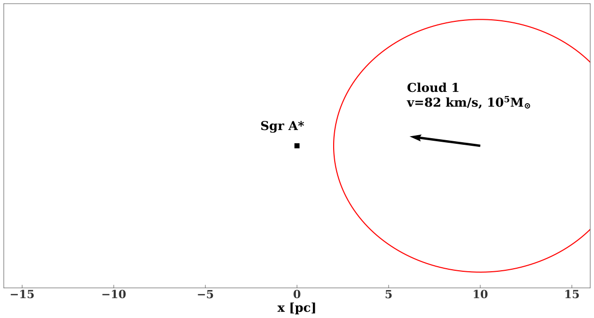
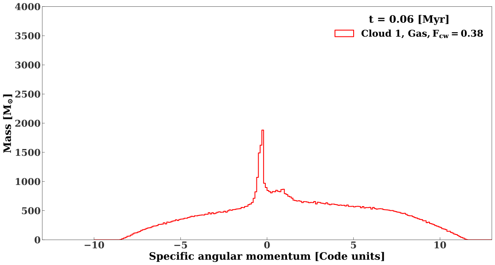
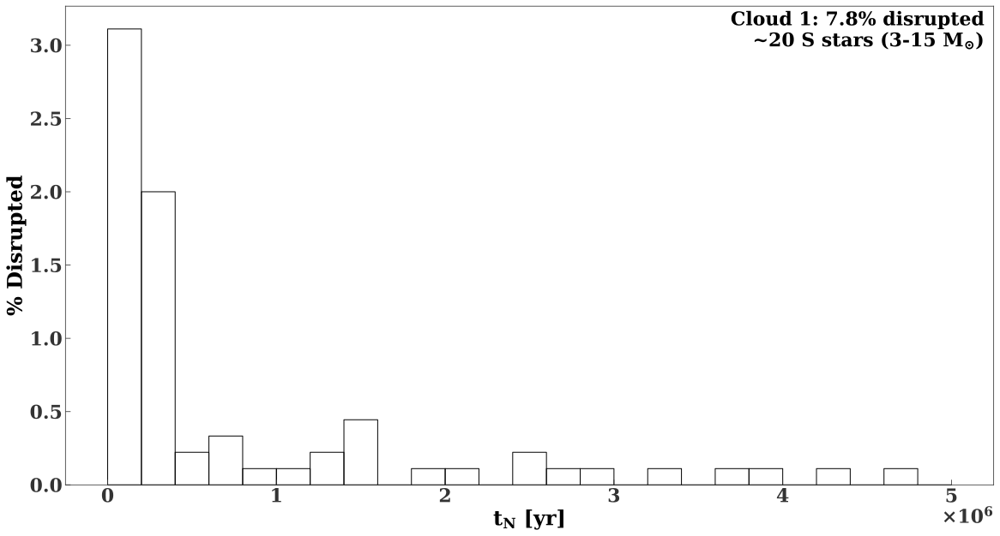

Formation and evolution of young stars in the Galactic Center
Aleksey Generozov
Technion
Collaborators: Ann-Marie Madigan, Sergei Nayakshin, Hagai Perets
Background on Young Stars

Background on young stars
- Galactic Center S Stars
Eckart&Genzel1997, Ghez+1998
Binary disruptions
Perets+2007 : Binaries scattered from >1 pc distancesMadigan+2009* : Binaries from
young disc
Disk Scenario
Disc formation: Molecular cloud disruption

- Previous work: Eccentric disc, but no extreme eccentricities
(Bonell&Rice 2008, Gualandris et 2012) - Try to find conditions that work
Generozov , Nayakshin, and Madigan 2022
Simulation setup
Simulation setup

Simulation setup
Simulation setup
- Gadget3, SPH,
Springel 2005 - 400K particles
- Cooling/Star formation (sink particles)
Simulation setup: Background density
- Controls precession!
- Assume fixed $r^{-1.16}$ density
(Schodel+2018) - $1.2\times 10^6 M_{\odot}$ --stellar mass inside central pc.
Evolution of disrupted cloud
- ~0.5 pc (12'') across
- ~$10^5-2\times10^5 $ yr
Angular momentum distribution of the disc
Angular momentum distribution of the disc
Angular momentum distribution of the disc
Angular momentum distribution of the disc
Gas → N-body
Observational comparison: Eccentricity
Observational comparison: Eccentricity
Observational comparison: Surface density
Caveats
- Initial conditions
- Gas at late times
- Fixed background density
- No mass function
Binary disruptions
- 'Disruption'=Passing within $3\times 10^{-4}$ pc of SMBH
- Tidal radius of $20 M_{\odot}, 1$ AU Binary
Disruption times
Disruptions: Angular distribution

Reproducing the S-star orbits
Generozov &Madigan 2020
Binary disruptions 101
Binary disruptions 101
Binary disruptions 101
Modeling binary population
| Parameter | Distribution |
| $a_{\rm bin}$ | $a_{\rm bin}^{-1}$ |
| $m_*$ | $m_*^{-1.7}, 8 M_{\odot}\leq m_* \leq 15 M_{\odot}$ |
| Eccentricity | Thermal |
Simulating binary disruptions:
- Many 3-body simulations (AR--Chain;
Mikkola&Merritt 2008 ). - Binary COM approaches SMBH on eccentric orbit
- Semimajor axis of 0.05 pc (~Inner edge of disk)
Results: Bound stars
Relaxation


- Effective over ~5 Myr?
Black holes dominate relaxation!

- $\sim 10^3$ BHs in central 0.1 pc (2.5'')
- Mass segregation
(e.g. Morris 1993) or In-situGenerozov et al 2018 - $m_{\rm bh}(r)=2.4\times 10^4 \left(\frac{r}{0.1 {\rm pc}}\right) M_{\odot}$
(Antonini&Merritt 2013) - Same stellar profile as before
Diffusion coefficients

Eccentricity evolution
Semimajor axis dependence
Semimajor axis dependence
- Comparable timescale (~6 Myr)--For close in S-stars
- Increasing mass of each BH speeds up RR
S-star masses (Generozov 2021)
- Sampling/Unequal mass binaries


Probability of no massive S-stars

Returning to ejected stars
- Propagate ejected stars through Galactic potential
Model Galactic Potential
After 5 Myr Propagation
Angular distribution (Generozov 2020)
Observed hyper/high velocity stars
- O(10)
(Brown+2018) - Late-type B-stars
- Traveling for $\sim 10^8$ yr
Observations: Velocity distribution
Observations: Velocity distribution
- Models predict ~40-60% of stars should be above 700 km/s
(Rossi+2014)
Possible explanations?
- Binary population?
- Disruption process [Repeated encounters?]


- Different origin?
- Observational bias?
Possible explanations?
- Binary population?
-
Disruption process [Repeated encounters?]
- Different origin?
- Observational bias?
Repeated encounters (Generozov &Perets 2022)
- Binaries-->disrupting orbits
- Empirical distributions for binary properties
(Moe+2017)
Repeated encounters?
Predicted velocity distribution
Conclusions
- Cloud disruption can explain young disc in Galactic center.
- Mass and velocity of initial cloud can be constrained.
- S stars produced by binary disruptions.

- S star eccentricities can be explained with black holes
(see also Perets+2009, Antonini&Merritt2013, Tep+2021) - Predicted anisotropy of ejected stars.